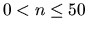
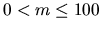

| DNA Sorting |
One measure of ``unsortedness'' in a sequence is the number of pairs of entries that are out of order with respect to each other. For instance, in the letter sequence ``DAABEC'', this measure is 5, since D is greater than four letters to its right and E is greater than one letter to its right. This measure is called the number of inversions in the sequence. The sequence ``AACEDGG'' has only one inversion (E and D)--it is nearly sorted--while the sequence ``ZWQM'' has 6 inversions (it is as unsorted as can be--exactly the reverse of sorted).
You are responsible for cataloguing a sequence of DNA strings (sequences
containing only the
four letters A, C, G, and T). However, you want to catalog them,
not in alphabetical order, but
rather in order of ``sortedness'', from ``most sorted''
to ``least sorted''. All the strings are of the same length.
The first line of each dataset contains two integers: a positive integer n ( ) giving the length of the strings; and a positive integer m ( ) giving the number of strings. These are followed by m lines, each containing a string of length n.
Print a blank line between consecutive test cases.
1 10 6 AACATGAAGG TTTTGGCCAA TTTGGCCAAA GATCAGATTT CCCGGGGGGA ATCGATGCAT
CCCGGGGGGA AACATGAAGG GATCAGATTT ATCGATGCAT TTTTGGCCAA TTTGGCCAAA